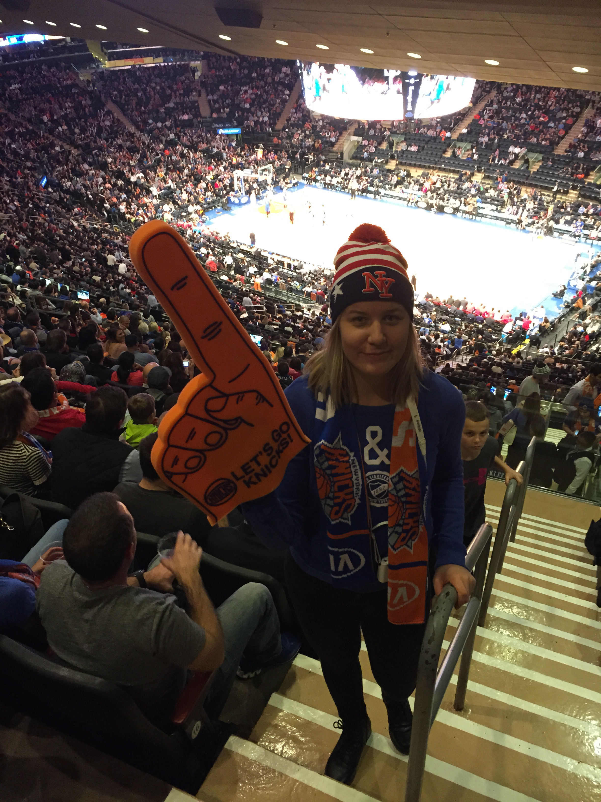

Voit lukea tietoa minusta ja opinnoistani. Mikäli kiinnostuit, ota minuun yhteyttä. Äläkä unohda lukea CV:täni!
Avaa CV → CV in English →
Voit lukea tietoa minusta ja opinnoistani. Mikäli kiinnostuit, ota minuun yhteyttä. Äläkä unohda lukea CV:täni!
Avaa CV → CV in English →Asun Leppävaarassa, mutta olen kotoisin Salon Kuusjoelta. Minulle Stadi on Hesa ja spora on raitiovaunu. Luonteeltani olen iloinen, reipas ja huumorintajuinen. Vahvuuksiani ovat oma-aloitteisuus, ahkeruus ja kärsivällisyys. Pidän matkustamisesta ja toiveenani olisi päästä matkustamaan mahdollisimman moneen maahan. Harrastuksiini kuuluu lenkkeily, kuntosali ja kavereiden kanssa nauraminen. Teini-ikäni vietin uimahallissa kaakeleita laskeskellen. Kun lopetin kilpauinnin, päätin hakeutua uimaopettajaksi. Nykyään olen työskennellyt opintojen ohella uimaopettajana uimaseura Cetuksella.
Olen innokas oppimaan uusia asioita ja lähden aina innolla mukaan uusiin juttuihin. Siksi olenkin nykyään tutorvastaavana Metropolian Leppävaaran toimipisteessä ja LEPO ry:n puheenjohtajana. Tämän lisäksi olen ollut METKAn edustajistossa tämän vuoden.
Valmistuin ylioppilaaksi keväällä 2012 Halikon lukiosta. Nyt opiskelen mediatekniikkaa neljättä vuotta Metropolia Ammattikorkeakoulussa Leppävaarassa. Opintoihini kuuluu kaikenlaista koodauksesta av-tekniikkaan.
Ensimmäisenä vuonna opin tekemään verkkosivuja ja sovelluksia käyttäen HTML-, CSS-, ja PHP-koodia. Opintoihin kuului myös perusteet Adoben Photoshopista, Illustratorista, Flashista ja InDesignistä.
Toisena vuonna taitoni vankistuivat aiemmin opituista asioista ja opin sen lisäksi JavaScriptiä, jQueryä sekä videoiden kuvaamista ja muokkaamista.
Kolmas opiskeluvuoteni alkoi työharjoittelulla STT-Lehtikuvassa, jossa olin töissä toukokuun puolivälistä lokakuun puoliväliin. Työharjoittelussa opin soveltamaan koulussa opittuja asioita ja taitoni kehittyivät. Sen lisäksi opin paljon uutistyöstä, mikä oli erittäin mielenkiintoista. Päätehtäviäni oli verkkovisualisointien suunnittelu ja toteutus joko koodaten tai valmiita työkaluja käyttäen. Harjoittelun päätyttyä suoritin muutamia seuraavan vuoden kursseja jo etukäteen.
Kesän 2015 olin töissä Ylen PlusDeskissä, jossa pääsin tekemään interaktiivisia sisältöjä verkkoon. Tämän lisäksi tehtäviini kuului erilaisten taittojen tekeminen feature-uutisiin ja muihin uutisartikkeleihin. Kesätöiden päätyttyä olen jatkanut PlusDeskissä osa-aikaisena.
Nyt neljäntenä opiskeluvuotena minulla ei ole enää ollut montaa kurssia. Insinöörityön teen siitä, miten template-pohjien käyttöönotto nopeuttaa työprosessia.
Knicksien #1 fani.